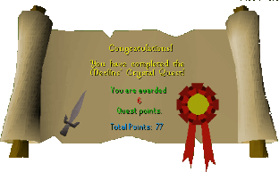

Merlin's Crystal
Description: Merlin the wizard has carelessly become imprisoned inside a giant crystal. Take up King Arthur's quest to free Merlin and become one of the knights of the round table.Difficulty: Intermediate
Length: Long
Items & Skills Needed:
- The ability to fight a level 39 Sir Mordred
Reward: 6 Quest points, Excalibur
Instructions:
Start the quest by talking to King Arthur in Camelot Castle and ask him if you can be a knight of his round table.
Talk to Sir Gawain and ask him how Merlin got trapped in the crystal, then ask him if he has any ideas to get into Keep Le Faye stronghold.
Go upstairs, then talk to Sir Lancelot and ask him if he has any ideas to get into the Keep Le Faye stronghold.
Stop by either Camelot or Catherby bank and equip yourself with gear and/or food to fight a level 39 knight.
Behind the candle shop, west of the bank is a crate, right click on it and choose "hide-in" and you will climb into the crate and be shipped to the Keep Le Faye stronghold.
Go up to the 3rd floor and talk to Sir Mordred, he will attack you. When you're close to killing him, Morgan Le Fay will appear and tell you to stop, and spare her sons life. Ask her how to untrap Merlin.
If you do not already have bat bones, kill a giant bat just outside of Keep Le Faye and pick up bat bones.
Talk to the candle maker inside his shop and ask him if he can make you a black candle. He'll tell you that he will make you one if you bring him a bucket full of wax. Grab the Insect Repellent one house north of the bank in Catherby then head west to the beehives use the insect repellent on the behinve then right click the hive and choose "take from".
Head back to the candle maker with your full bucket of wax and he will give you a black candle, use your tinderbox on the candle to light it.
Head to the Lady of the Lake at the nearby lake, south of Taverley and tell her you seek the Excalibur, she'll tell you she has to set a test for you and to wait for her at the jewlery shop in Port Sarim.
Head to the jewlery shop in Port Sarim, when you try to open the door a beggar will appear and ask for a loaf of bread to feed his family, give him the loaf of bread then he will turn into the Lady of the Lake and she will give you the Excalibur.
Now you will need to go to the Chaos Temple in the Varrock wilderness. From Varrock east bank, walk straight north until you reach level 12 wilderness, walk around the lava pit and walk south to the Chaos Temple. Right click on the altar and click "check altar" it will tell you the inscription which is "Snarthon Candtrick Termanto".
Head back to Camelot Castle with your lit black candle and bat bones. To the northeast side of the castle you will see a pentagram with an orange symbol on the floor, stand on that symbol drop your bat bones on it and a demon will appear you will then have to chant the inscription you've seen on the altar in the wild. Once you've chanted the correct words he'll tell you its done and you can now smash the crystal Merlin is in using the Excalibur.
Proceed to the top floor of the southeast end of the castle and use your Excalibur with the crystal and it will shatter to free Merlin, he tells you to speak with King Arthur for your reward.
Congratulations, Quest Complete!

This quest guide was written on RuneHQ by xxteargodxx. Thanks to Weezy and patgil2003 for corrections.
This quest guide was entered into the database on Thu, Mar 04, 2004, at 12:35:10 AM by Weezy and was last updated on Thu, Apr 22, 2004, at 03:28:02 PM.